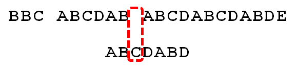
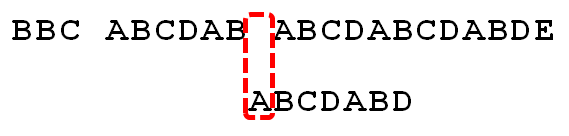

![]()

字符串匹配是计算机的基本任务之一。
举例来说，有一个字符串"BBC ABCDAB ABCDABCDABDE"，我想知道，里面是否包含另一个字符串"ABCDABD"？
许多算法可以完成这个任务，Knuth-Morris-Pratt算法（简称KMP）是最常用的之一。它以三个发明者命名，起头的那个K就是著名科学家Donald Knuth。

这种算法不太容易理解，网上有很多解释，但读起来都很费劲。直到读到Jake Boxer的文章，我才真正理解这种算法。下面，我用自己的语言，试图写一篇比较好懂的KMP算法解释。
1.

首先，字符串"BBC ABCDAB ABCDABCDABDE"的第一个字符与搜索词"ABCDABD"的第一个字符，进行比较。因为B与A不匹配，所以搜索词后移一位。
2.

因为B与A不匹配，搜索词再往后移。
3.

就这样，直到字符串有一个字符，与搜索词的第一个字符相同为止。
4.

接着比较字符串和搜索词的下一个字符，还是相同。
5.

直到字符串有一个字符，与搜索词对应的字符不相同为止。
6.

这时，最自然的反应是，将搜索词整个后移一位，再从头逐个比较。这样做虽然可行，但是效率很差，因为你要把"搜索位置"移到已经比较过的位置，重比一遍。
7.
一个基本事实是，当空格与D不匹配时，你其实知道前面六个字符是"ABCDAB"。KMP算法的想法是，设法利用这个已知信息，不要把"搜索位置"移回已经比较过的位置，继续把它向后移，这样就提高了效率。
8.

怎么做到这一点呢？可以针对搜索词，算出一张《部分匹配表》（Partial Match Table）。这张表是如何产生的，后面再介绍，这里只要会用就可以了。
9.
已知空格与D不匹配时，前面六个字符"ABCDAB"是匹配的。查表可知，最后一个匹配字符B对应的"部分匹配值"为2，因此按照下面的公式算出向后移动的位数：
移动位数 = 已匹配的字符数 - 对应的部分匹配值
因为 6 - 2 等于4，所以将搜索词向后移动4位。
10.

因为空格与Ｃ不匹配，搜索词还要继续往后移。这时，已匹配的字符数为2（"AB"），对应的"部分匹配值"为0。所以，移动位数 = 2 - 0，结果为 2，于是将搜索词向后移2位。
11.

因为空格与A不匹配，继续后移一位。
12.

逐位比较，直到发现C与D不匹配。于是，移动位数 = 6 - 2，继续将搜索词向后移动4位。
13.

逐位比较，直到搜索词的最后一位，发现完全匹配，于是搜索完成。如果还要继续搜索（即找出全部匹配），移动位数 = 7 - 0，再将搜索词向后移动7位，这里就不再重复了。
14.

下面介绍《部分匹配表》是如何产生的。
首先，要了解两个概念："前缀"和"后缀"。 "前缀"指除了最后一个字符以外，一个字符串的全部头部组合；"后缀"指除了第一个字符以外，一个字符串的全部尾部组合。
15.
"部分匹配值"就是"前缀"和"后缀"的最长的共有元素的长度。以"ABCDABD"为例，
－ "A"的前缀和后缀都为空集，共有元素的长度为0；
－ "AB"的前缀为[A]，后缀为[B]，共有元素的长度为0；
－ "ABC"的前缀为[A, AB]，后缀为[BC, C]，共有元素的长度0；
－ "ABCD"的前缀为[A, AB, ABC]，后缀为[BCD, CD, D]，共有元素的长度为0；
－ "ABCDA"的前缀为[A, AB, ABC, ABCD]，后缀为[BCDA, CDA, DA, A]，共有元素为"A"，长度为1；
－ "ABCDAB"的前缀为[A, AB, ABC, ABCD, ABCDA]，后缀为[BCDAB, CDAB, DAB, AB, B]，共有元素为"AB"，长度为2；
－ "ABCDABD"的前缀为[A, AB, ABC, ABCD, ABCDA, ABCDAB]，后缀为[BCDABD, CDABD, DABD, ABD, BD, D]，共有元素的长度为0。
16.
"部分匹配"的实质是，有时候，字符串头部和尾部会有重复。比如，"ABCDAB"之中有两个"AB"，那么它的"部分匹配值"就是2（"AB"的长度）。搜索词移动的时候，第一个"AB"向后移动4位（字符串长度-部分匹配值），就可以来到第二个"AB"的位置。
（完）
 twitter
twitter![]() weibo
weibo


Shadowmourne 说：
回想起了高中NOIP的日子……
2013年5月 1日 19:05 | # | 引用
Mr.king 说：
Robert Sedgewick https://class.coursera.org/algs4partII-001/lecture/40 用自动机解释kmp，感觉更妙，就是实现的时候空间复杂度高点。个人感觉Sedgewick这个老头讲东西确实牛逼，很多看书很难理解的算法，他一讲就明白了，有兴趣的可以去part1看看他讲的红黑树，特别牛逼。
2013年5月 1日 19:34 | # | 引用
test 说：
有时候，字符串内部会有重复。比如，"ABCDAB"之中有两个"AB"，那么它的"部分匹配值"就是2（"AB"的长度）
这个应该说是，字符串头部和尾部有重复？
如果是ABCABD这样即使有两个AB也不能部分移动吧
2013年5月 1日 19:42 | # | 引用
hoot 说：
的确简单易懂，可以来一本适用指南啊，想当初看这个算法 话了我好几天去理解 各种数学符号，各种证明 头都大了
2013年5月 1日 19:51 | # | 引用
阮一峰 说：
谢谢指出，我确实没想到这一点，已经更正了。
2013年5月 1日 20:12 | # | 引用
pi1ot 说：
那就是说需要搜索的词如果内部完全没有重复，那这个算法就退化成了遍历？
2013年5月 1日 20:31 | # | 引用
Chris 说：
因为空格与A不匹配，继续后移一位。
但是这个移动位数 = 已匹配的字符数 - 对应的部分匹配值 = 0 - 0 = 0矛盾啊？
2013年5月 1日 20:48 | # | 引用
hejianchao 说：
原来如此。解释得真清晰！
2013年5月 1日 20:51 | # | 引用
阮一峰 说：
不是。如果第一个字符就不匹配，搜索词直接比较下一个字符，不用考虑《部分匹配表》。
表中第一列的那个“A”，是指有一个A匹配。
2013年5月 1日 21:15 | # | 引用
t.k. 说：
是我最喜欢的算法之一。
2013年5月 1日 21:16 | # | 引用
RedNax 说：
我一直以为KMP是string search最优的算法（时间复杂度是O(n+k)）,直到我知道了Boyer–Moore算法……才发现原来还有更加巧妙的方法……
2013年5月 1日 21:40 | # | 引用
sokoban 说：
没错，这个算法本质上就是在遍历基础上的一个改进。在最坏的情况下，和没有改进之前一样，甚至严格说还差了一点点，因为每一步都多了比较的开销。
2013年5月 1日 21:42 | # | 引用
Chris 说：
应该不是的吧，最坏情况下也是o(m+n)的，而遍历是o(m*n)
2013年5月 1日 21:56 | # | 引用
sokoban 说：
你说得对。
但是最坏的个例的确可能一样。如在AAAAAAAAAAAAAAAAAAAAAAAAAA里面找AB
2013年5月 1日 22:04 | # | 引用
sokoban 说：
我还是错的。KMP的确似乎任何时候都要快一些。
2013年5月 1日 22:06 | # | 引用
sokoban 说：
极端例子：在AAAAAAAAAAAAAAAAAAAAAAAA里面找BB。
这个例子总算对了吧?
2013年5月 1日 22:09 | # | 引用
sokoban 说：
搜索了一下，Boyer–Moore算法每次从要找的Pattern末尾开始比较，并且一般用两条规则来控制移位（KMP只有一条移位规则），比KMP还好。
2013年5月 1日 22:14 | # | 引用
ballcat 说：
不会
尝试匹配第一个，发现是A，所以要滑移。BB里面根本没有A，所以会滑移一个位置。
这是一个经典的势能分析例子。原串的指针只会往后移，目标串的指针只在原串指针往后移时往后移相同的步数，显然目标串指针往前移的步数不会多于往后移的步数。所以加起来所有指针移动的步数不会超过三倍的原串长度。
后缀匹配的平均时间可以是亚线性因为可以根据目标串的特点忽略掉原串的某些部分。但是最坏情况下还是线性的……
2013年5月 1日 23:15 | # | 引用
zt 说：
看《算法导论》的图32-10，就比较好理解了。
2013年5月 1日 23:16 | # | 引用
kanaz 说：
最简单解释就是把搜索词自相关一下
2013年5月 2日 01:04 | # | 引用
Henry 说：
2013年5月 2日 08:59 | # | 引用
王大德 说：
我以前也写了一篇博文,理解kmp,核心在于next数组.我认为不要拘泥于过程,而要用抓住其递归的本质,摘录一部分如下:
理解next数组生成的算法花费了一些力气.该算法用了数学归纳法,读起来还有一些递归的意味.
这里再复述一下,求next[i+1],就是看P[1,i]的最大子串(姑且叫这个吧),如果匹配好说,如果不匹配则继续看这个最大子串的最大子串,重复这个过程,直到算出结果.
2013年5月 2日 11:06 | # | 引用
rian 说：
总结出了两种情况：
1：移动一位，如果搜索词第一个字符与目标字符串不匹配就移动一位，如果搜索词第一个字符与目标字符串匹配但是第二个字符与目标字符串不匹配也是移动一位（因为可以理解如果搜索词值匹配了第一个字符或者第一个字符都不匹配，那么展现不出特征无法推理搜索词移动一位是否是没有意义的，所以只能移动一位）
2：移动大于一位，如果搜索词第一个字符和第二个字符都与目标字符串匹配，那么就展现出了特征，可以推理，移动一位是没有意义的，所以可以尝试移动2位甚至更多
给博主一个建议：
觉得应该可以在部分匹配表再加一行移动位数的数据，以后直接查询移动位数就可以了，不要临时再算
2013年5月 2日 12:26 | # | 引用
V客小站 说：
各位有没有在实际的项目中用过KMP算法呢？
2013年5月 2日 22:18 | # | 引用
pi1ot 说：
没有，我遇到过的实际需求更多是对一段长本文进行词表匹配或者替换，词表本身很大，但是每个词条比较短，类似于editor keyword highlight场景
2013年5月 3日 15:52 | # | 引用
nklike 说：
楼主的这个算法感觉和这里面的例子第二步不能够对应上去
http://www.cs.utexas.edu/~moore/best-ideas/string-searching/kpm-example.html#step02
按理说
example的表应该是
0000001
ER和EX不匹配，按照楼主的说法应该是移动一位，但是例子里面直接移动了2位
应该是已经匹配的个数2减去EX对应的部分匹配值0，而不是1-0
2013年5月 3日 16:18 | # | 引用
阮一峰 说：
@nklike：
是跟他不一样。
那里的理由是R不出现在EX里，所以可以移2位。我觉得那不是KMP算法，而是Boyer-Moore算法的“坏字符规则”。
2013年5月 3日 18:47 | # | 引用
biaobiaoqi 说：
最近时常从各个信息源获取到ruanyifeng的博客。小弟我也郑在自己学着积累思考，写博客。从博主这里学习了很多。
2013年5月 3日 21:09 | # | 引用
hbprotoss 说：
感谢LZ，这篇文章确实比较容易理解
2013年5月 4日 09:04 | # | 引用
周浩楠 说：
有醍醐灌顶的感觉。
2013年5月 4日 09:44 | # | 引用
longsail 说：
部分匹配值"就是"前缀"和"后缀"的最长的共有元素的长度，这里以AACDAA为例，
"AACDAA"的前缀为[A, AA, AAC, AACD, AACDA]，后缀为[A,AA,DAA,CDAA,ACDAA]，共有元素为"A","AA"，这时取最长字符串的长度？
2013年5月 4日 10:07 | # | 引用
Melo618 说：
移动位数 = 已匹配的字符数 - 最后一个匹配字符对应的部分匹配值
这样更准确
2013年5月 4日 12:03 | # | 引用
阮一峰 说：
@longsail:
最长字符串的长度是2。
2013年5月 4日 12:14 | # | 引用
YangZhixuan 说：
初学KMP的时候，一直不得要领。后来学习AC自动机的时候，一下子明白了KMP实际上是AC自动机的特殊情况。
2013年5月 6日 16:37 | # | 引用
Daniel 说：
难道是我的错觉，第12步：
12.
逐位比较，直到发现C与D不匹配。于是，移动位数 = 6 - 2，继续将搜索词向后移动4位。
但是
搜索词 A B C D A B D
部分匹配值 0 0 0 0 1 2 0
移动位数 = 已匹配的字符数 - 对应的部分匹配值
难道不是应该 移动位数 = 6 - 0 吗？ 最后一个D的匹配值是0啊。
2013年5月 7日 09:27 | # | 引用
Daniel 说：
Sorry, 我没有看到第16步。
2013年5月 7日 09:32 | # | 引用
Daniel 说：
Sorry, 看东西一直囫囵吞枣，仔细的看了几遍，又码了下代码，终于完全明白了。非常感谢。抱歉前面两次的留言。
2013年5月 7日 10:40 | # | 引用
红色石头 说：
非常不错，简介易懂，我转载了，并评价为：图文并茂，生动形象易懂。
http://50vip.com/blog.php?i=228
2013年5月 9日 15:03 | # | 引用
callmestring 说：
算法的关键在于next数组的生成,用动态规范法生成。
比如：str = abcabd，next初始化为：[0,0,0,0,0,0];
已知第0个字符a没有任何相同的前后缀，则next[0] = 0。
加入第1个字符，则前面已知的最长公共前后缀长度为next[0]，此时如果str[next[0]]与str[1]相等，就可知道next[1]=next[0]+1，如不相等则可直接判定next[1]=0；这里str[next[0]]!=str[1]，故next[1]=0。
...，next[2]=0。
...，next[3]=next[2]+1=1。
...，next[4]=next[3]+1=2。
...，next[5]=0。
最后，next=[0,0,0,1,2,0];
不知道KMP里面是否是这样生成的？
2013年5月10日 21:30 | # | 引用
bibodeng 说：
能把复杂的东西讲清楚，说明真的理解透彻了。看了这篇真的清晰很多，之前看《算法导论》，觉得看过就行了，其实是很多不懂，后来又忘了。
2013年5月11日 21:22 | # | 引用
Raw 说：
kmp算法主要是失效函数的这个表如何计算，其实质就是一个变形的状态机，用典型的数学归纳法来计算此表，有一个初始状态f(1)=0，然后迭代出所有位置上的失效值。
这里只说清楚了如何用失效函数来解决字符串匹配问题，但并没有给出如何计算失效函数的方法。
另外kmp算法对字母类语言理论效率比价高，但是对汉语这种没有太多前缀字串和后缀字串重合的语言，其实效率和最普通的匹配没太大差别。
2013年5月12日 11:10 | # | 引用
starshine 说：
省略了非常重要的一个问题，
就是部分匹配表的算法问题，如何得到？
只是给出原理是不够的。
另外，对于kmp算法正确性的解释，明显不够。
如果真心研究这个问题，还是需要去看看更想尽的解释，不要怕麻烦和困难。
看这个，只能了解表象。
2013年5月14日 11:34 | # | 引用
starshine 说：
@callmestring：
这个解释貌似不错。看next函数的生成代码，非常简洁，但是理解起来相当的不容易，不明白其推导过程。
2013年5月14日 11:38 | # | 引用
吹风 说：
如果是比较中文字符串怎么做呢？
2013年5月17日 17:32 | # | 引用
radix 说：
@callmestring：
对于 str=[A,C,A,A]的str[3]就不正确了。
2013年5月18日 16:34 | # | 引用
tom 说：
Robert Sedgewick 这个实际上是string-matching automaton，需要预算这个pattern的整个字符集的自动机，个人感觉并不是kmp。
2013年5月25日 09:21 | # | 引用
于梓峤 说：
部分匹配值的概念为什么要提出来？为什么又要这么定义？抱歉看不大懂，不过对于KMP算法大概是明白了
2013年5月26日 10:51 | # | 引用
DOVE 说：
就是，str = “acaa”,照这样算，在next[3]就不对了！！！
2013年5月30日 22:40 | # | 引用
xxx 说：
next值求得不对
2013年6月24日 10:58 | # | 引用
xiaolong 说：
解释的太清晰了，谢谢啦
2013年6月29日 21:24 | # | 引用
acmerfight 说：
按照你的做法
ababb 的next数组是什么呢？不对吧
2013年7月 2日 10:59 | # | 引用
J 说：
做OJ题目的时候恰好用到，现在终于懂了KMP是怎么回事了~^ ^
2013年7月22日 16:04 | # | 引用
刘玉 说：
为什么按照算法导论上的例子“ababababca”，再通过移动位数的公式得不到书上的那个数组呢？
2013年7月31日 21:17 | # | 引用
楚轩 说：
感谢您的文章，真的写的很好，3Q！
2013年8月10日 15:00 | # | 引用
serika00 说：
看的第三篇关于KMP的，直接懂了，写得比其它两篇简单多了。
其实那两篇根本没认真看完，太长了，感觉对于有点计算机基础的人来说，KMP也不是一个需要那么多文字来描述的算法。
喜欢博主这种简单易懂的说明方式。
2013年8月12日 10:27 | # | 引用
郭春阳 说：
如果你匹配结束时，此时匹配的是ABCAB，此时查表肯定是2啊。
你仔细理解下后缀。后缀不是整个字符串的后缀，而是已经匹配部分的后缀。
2013年8月23日 00:49 | # | 引用
郭春阳 说：
最喜欢的博主的文章，通俗易懂，这才是真正的为人民服务。
2013年8月23日 00:51 | # | 引用
花开献佛堂 说：
解释的不错，终于看懂了，谢谢
2013年8月25日 19:26 | # | 引用
奔跑的猫 说：
部分匹配值都算出来了 为什么不算出移动值表呢
2013年9月 5日 14:07 | # | 引用
ZYY 说：
真的很清楚易懂啊，谢谢整理
2013年9月18日 15:42 | # | 引用
gsj 说：
我在网上看了好多，都不怎么懂，看了这个，恍然大悟。
2013年10月24日 19:30 | # | 引用
charmingcui 说：
之前看了很多博客都不理解，看了楼主的解释忽然间恍然大悟，谢谢楼主！
2013年11月18日 15:52 | # | 引用
needle 说：
大神,
我刚学三天的python.
碰巧看到了你的文章后,
我用三个多小时写出KMP啦!
会不会很蠢....
origin_str's length is: 23 match_pattern_str'length is: 7
------------origin_Str_index is: 0
------------origin_Str_index is: 1
------------origin_Str_index is: 2
------------origin_Str_index is: 3
------------origin_Str_index is: 4
length_matched is: 1
length_matched is: 2
length_matched is: 3
length_matched is: 4
length_matched is: 5
length_matched is: 6
now, pointer skips 4 index according to KMP
------------origin_Str_index is: 8
length_matched is: 1
length_matched is: 2
now, pointer skips 2 index according to KMP
------------origin_Str_index is: 10
------------origin_Str_index is: 11
length_matched is: 1
length_matched is: 2
length_matched is: 3
length_matched is: 4
length_matched is: 5
length_matched is: 6
now, pointer skips 4 index according to KMP
------------origin_Str_index is: 15
length_matched is: 1
length_matched is: 2
length_matched is: 3
length_matched is: 4
length_matched is: 5
length_matched is: 6
length_matched is: 7
position is at: 15
True
2013年11月27日 00:41 | # | 引用
KG 说：
很有用，必须要留言，顶楼主！
2013年12月27日 15:20 | # | 引用
HZ 说：
非常好的文章，受益匪浅。请教一下：作者那个图是怎么画出来的？我指的是图1到16，尤其是上下对齐的红虚线框。谢谢。
2014年1月16日 08:58 | # | 引用
zhenxing1114 说：
可以在ppt、word里写好，然后截图吧，^_^
2014年1月22日 22:59 | # | 引用
zhenxing1114 说：
这篇看上去好懂多了，回头再结合其他的文章仔细看看。
2014年1月22日 23:01 | # | 引用
好人 说：
有空的话把next数组的算法也讲讲吧
2014年2月24日 14:49 | # | 引用
JackieZhu 说：
完全没有重复也是O(n)的啊
2014年3月17日 23:19 | # | 引用
轻抚麦浪 说：
寥寥数语，便将KMP算法的精髓尽数勾勒了出来，很好!
2014年3月28日 17:10 | # | 引用
jihite 说：
我用c++实现了下，这里贴不开，去我的博客看吧。
http://www.cnblogs.com/kaituorensheng/p/3633700.html
2014年3月30日 12:13 | # | 引用
vivi单 说：
昨天开始研究这个算法一直不得要领，直到看到这篇博文。不能更赞。接下来结合其他书籍和相关资料深入理解，然后码码代码。
2014年4月 3日 16:15 | # | 引用
Tim 说：
一峰的解释从来都是简明直白，能把复杂的东西清晰简洁的表述出来，而且还方便记忆。
KMP算法的前缀后缀的匹配理论真是优美。
2014年4月20日 22:05 | # | 引用
woiavril 说：
你确定你说的对，按博主的理解是前缀是除字符串最后一个字符的所有组合，而后缀是除最前面一个字符的所有组合，如果是ABCABD,前缀的组合有{ABCAB,ABCA,ABC,AB,A},后缀有{BCABD,CABD,ABD,BD},这两个集合根本没有重复的，所有他的部分匹配值为0；
2014年5月14日 13:27 | # | 引用
zuoxinyu 说：
正在练习最简单的遍历匹配，直觉还有更高效的算法，这个虽然看不大懂，但是给了很大启发。
2014年5月16日 22:03 | # | 引用
Zhenghui 说：
博主太nb了！KMP从头看下来，几分钟，就看懂了！
2014年5月22日 03:15 | # | 引用
Alex_Huang 说：
很受用，简单易懂，谢谢楼主分享。
2014年6月28日 23:07 | # | 引用
wzz 说：
如果按照这样的规则判断移动位数：移动位数 = 已匹配的字符数 - 对应的部分匹配值，
那第一位A如果不匹配应该如何计算移动位数呢？
移动位数 = 0（未匹配任何字符） - 0，结果还是0，这样的话第一位不匹配就不用移动了，显然是不对的。所以是不是把A的部分匹配值变为-1更合适？
谢谢
2014年6月30日 15:30 | # | 引用
丁松 说：
记得大学时，老师讲过，很麻烦，不过我想计算机执行起来是不会介意
2014年7月 8日 18:19 | # | 引用
小强 说：
膜拜楼主，楼主很厉害
2014年7月25日 14:49 | # | 引用
wkingfly 说：
第10步，后移4位之后，第一对儿AB和第二对AB重合，C对着一个空，那么这是我们还要从第一个AB开始比较么，比较和母串对AB相等，然后到C和空格不相等，是不是应该直接从C开始对比呢？
我用python实现了下，https://github.com/wkingfly/kmp 多多指教
2014年8月 7日 23:23 | # | 引用
简凡 说：
好像有点漏洞：
比如:
ABCABDABCABC
ABCABC
因为C和D不匹配，按照文中的公式，应右移5-2=3位。其实可以直接移动6位。
2014年8月 8日 09:40 | # | 引用
rui 说：
其实理解kmp算法挺简单
只要先说出不适合使用这种算法的情况，大概读者就会明白了大概
模式字符串如果没有重复的字符，就不适合用kmp算法
2015年2月 3日 10:25 | # | 引用
rui 说：
next数组求起来还是有技巧的
按照阮一峰的解释会比较慢
2015年2月 7日 18:12 | # | 引用
warmland 说：
谢谢楼主，这个真的是最容易理解的一个
如果您直接贴上kmp完整算法简直就是完美了
2015年3月29日 01:11 | # | 引用
Sunshine 说：
很感谢楼主，很快就懂了，还写好了代码，太开心了
2015年4月 1日 23:01 | # | 引用
陈阳 说：
请问这个部分匹配表和next[]数组是什么关系？
2015年4月16日 16:08 | # | 引用
牛漾 说：
同问，博主说的这个部分匹配表和next数组有什么关系呢
2015年6月 2日 08:58 | # | 引用
Hao Zhou 说：
看了《大话数据结构》，再看你的讲解，醍醐灌顶
2015年7月 8日 02:05 | # | 引用
haihongS 说：
看懂了一峰的这篇文章，等于是知道kmp是怎么操作的一个过程，所以我能马上写出一个初版的kmp算法。但这个初版的优化并不是很好，而且对于kmp为什么这么操作理解的并不是很透，所以后来又看了matrix67的那篇文章，终于懂了原理，然后根据他的伪代码写了最终版的kmp。
http://haihongblog.com/archives/911.html 这是我自己学习kmp的一个过程。
多谢一峰。
2015年7月13日 10:45 | # | 引用
酱油 说：
有个问题不明白，为什么"A"的前缀和后缀都为空集呢？我看《算法导论》上说，若w为x前缀，则有|w|
2015年7月21日 17:06 | # | 引用
FireOct 说：
个人感觉鱼C工作室的KMP算法讲的很不错，可以去看看http://study.163.com/course/courseMain.htm?courseId=468002
2015年7月25日 23:41 | # | 引用
FireOct 说：
这里的前后缀解释的很好，谢谢
2015年7月25日 23:44 | # | 引用
Ray 说：
看上去满复杂的算法,其实那句本质道出了原因,可以想到的是在搜索引擎里会有一定应用.
2015年7月28日 20:10 | # | 引用
Ray 说：
2015年7月28日 20:12 | # | 引用
Happy 说：
通俗易懂
2015年8月 5日 21:48 | # | 引用
noble4cc 说：
阮老师讲的非常透彻，博客精湛程度堪比论文，佩服！！
2015年8月27日 21:52 | # | 引用
Rorschach 说：
感谢阮老师，本科看书没学明白的东西看明白了。
2015年9月 8日 21:10 | # | 引用
左 说：
2015年9月22日 19:49 | # | 引用
杨长利 说：
你不需要更正，你的前缀与后缀的说明是对的，这种情况是不会有两个重复的AB的，看了你的讲解，很清晰易懂。
2015年9月30日 17:22 | # | 引用
帅 说：
kMp算法模式匹配表的首位数字是-1 虽然思路和你差不多
2015年10月19日 20:30 | # | 引用
王允欣 说：
找了好多资料，还是博主的这篇浅显易懂，不过要是能把next数组放出来就好了。。。
2015年10月27日 14:44 | # | 引用
荒 说：
由“部分匹配值”表求next数组的方法十分十分简单：在“部分匹配值”表中，保持搜索词不动，将部分匹配值整体右一位（溢出的数不要了），然后初值赋为-1。
至于代码实现就不多说了。另外，Sunday算法比BM算法更快～
后来我在CDSN博主July的博文看到的，说下。最后谢谢一峰，看完这明白多了～真醍醐灌顶
2015年10月28日 21:34 | # | 引用
Jim 说：
讲的很棒，不过博主的网站有点粗糙哦，评论居然没有分页
2015年11月 5日 03:28 | # | 引用
洪毓钦 说：
很详细哈！！！
2015年11月29日 18:29 | # | 引用
古木天琪 说：
豁然开朗啊
2015年12月31日 12:09 | # | 引用
shabbyju 说：
为什么和CSDN的另一位都些相似，难道你们都借用了别人的东西。
2015年12月31日 22:29 | # | 引用
大爱小柴胡颗粒 说：
比书上的写得太好了，如果有代码看就更好了
2016年2月 5日 15:10 | # | 引用
lyh 说：
神作啊，课本看了好长时间都没看懂，这篇扫了一遍就懂了
2016年3月16日 20:40 | # | 引用
梁欢乐 说：
你咋知道可以直接移动6位呢？是因为你看到了匹配字符串ABCABC的第三位是C，而且与待匹配的D不相等吧？这其实已经是移动了3位，第二次比较了。
2016年4月18日 14:58 | # | 引用
panty 说：
确实是有漏洞的，
{1, 1, 2, 3, 3, 3, 6}按博主做法是ABCDABD的移动量(即相减算得)
但是对于ABCDABD, 应为{1,1,2,3,6,6,4}
2016年4月26日 12:39 | # | 引用
binz 说：
模式字符串中没有重复字符，反而适合KMP 吧？ 这样每次对 i 进行的自增值都可以最大化了。
2016年5月 1日 17:16 | # | 引用
laocaixw 说：
2016年5月 6日 19:41 | # | 引用
laocaixw 说：
感觉你的解释很清晰易懂，我刚刚接触这个算法，看了好几个人的博客，都没看懂。看了你的，再结合别的例子，才慢慢明白过来，不知道我的看法对不对。。
2016年5月 6日 19:45 | # | 引用
马新峰 说：
感谢楼主的讲解，非常通俗易懂
2016年8月12日 15:22 | # | 引用
ssSolars 说：
这个最坏情况好像是src: AAABAAABAAABAAAB.......
tpl: AAAA
类似这种情况可能是最坏的吧、严重到退化成o(mn)吧、不知道我有没有算错。。。。。
2016年8月19日 16:26 | # | 引用
leon 说：
同为noier~
2016年9月16日 22:27 | # | 引用
Jack 说：
部分匹配表是否存在着一定的错误。不应该在每一位计算之前的序列吗。
参考：https://zh.wikipedia.org/wiki/克努斯-莫里斯-普拉特算法
2016年9月20日 08:44 | # | 引用
OnenessW 说：
写的真好！
2016年11月 6日 05:23 | # | 引用
Jason Wu 说：
逐位比较，直到搜索词的最后一位，发现完全匹配，于是搜索完成。如果还要继续搜索（即找出全部匹配），移动位数 = 7 - 0，再将搜索词向后移动7位，这里就不再重复了。 这一句有点疑问，ABCABCABCABC中查找ABCABC，在找到了第一个ABCABC之后，移动6位，此时会跳过一组，不知是不是我的理解有误。
2016年11月 7日 16:23 | # | 引用
轻如纸张 说：
AAAAAA... 里面找 B 这样算不算退化到 O(m*n)？233
2016年12月 4日 07:25 | # | 引用
算法小白 说：
这篇文章写得我一看就懂了，，可以转载吗，作者？
2017年2月15日 19:52 | # | 引用
刘毅 说：
可以看下我的文章，很详细的讲解，当然也是借鉴了阮一峰老师的思路：http://www.61mon.com/index.php/archives/183/
2017年3月 7日 10:29 | # | 引用
buoge 说：
纠结了一天的kmp终于在这里找到了通畅的理解方式！特此感谢一下，阮老师的辛苦付出！
2017年4月13日 13:27 | # | 引用
zcjlovecode 说：
我觉得楼主并没有讲清楚啊，next数组是怎么得来的，我觉得这才是关键，应该有一个归纳法总结的，而不是草草的用一种已经得到的方法来得出结论
2017年7月10日 00:14 | # | 引用
Hzs.emp 说：
写的很好，简单易懂，但是！！！！！
！！！！！
算法思想虽然正确，，思路却错了!
1.next数组获取方式有误，
2.字符串检索方式仍然有误。
会导致kmp算法退化到不如朴素匹配！！
本人是在读不懂程老师的《大话数据结构》第五章中讲解的kmp算法的情况下，才在网上搜到这篇博客，
读完之后，瞬间茅塞洞开。
但是，码完代码，计算时间复杂度时，觉得有些蹊跷，
再回过头看程老师的算法，才明白一些，初学者可以去网上搜一搜这本书中的对应章节。
2017年7月13日 11:11 | # | 引用
无处自由 说：
kmp算法的难点和关键在于next数组的构建，楼主却完全没有提到，所以价值不大。推荐这个链接：http://wiki.jikexueyuan.com/project/kmp-algorithm/define.html，分析得深入细致，看了很多链接，这个最好。
2017年8月 2日 07:44 | # | 引用
Shindo 说：
那应该就是每次移动最大长度啊
2017年11月17日 10:30 | # | 引用
lucy 说：
现在网址是 https://www.coursera.org/learn/algorithms-part2/lecture/n3ZpG/introduction-to-substring-search
2017年12月13日 12:07 | # | 引用